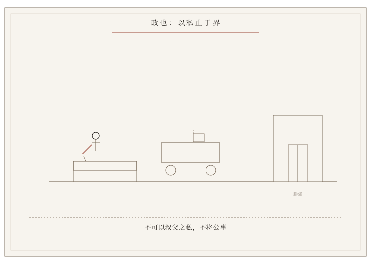

檀弓下 · 四·六十二 · 第 387 课
滕成公之丧，使子叔敬叔吊，进书；子服惠伯为介。及郊，为懿伯之忌不入。惠伯曰：「政也，不可以叔父之私，不将公事。」遂入。
说什么事：滕成公死，鲁君遣子叔敬叔往吊，奉君之吊书；子服惠伯为副使。行至滕之近郊，敬叔因与懿伯有旧怨，不敢入。惠伯说：「这是国政，不可以叔父之私，不办君之公事。」于是入。
落在哪一层：以「政」压「私」。一使既出，便不再属于自己。
为何编在此位：上节论邦交之界，此节论使节之私。一在君与君之间，一在私与公之间。
【经】滕成公之丧，使子叔敬叔吊，进书；子服惠伯为介。及郊，为懿伯之忌不入。惠伯曰：「政也，不可以叔父之私，不将公事。」遂入。
【注】鲁昭三年。／子叔敬叔，鲁宣公弟叔肸之曾孙叔弓也。进书，奉君吊书。／惠伯，庆父玄孙之子，名椒。介，副也。／郊，滕之近郊也。懿伯，惠伯之叔父。忌，怨也。敬叔有怨于懿伯，难惠伯也。《春秋传》曰：「敬叔不入。」／政，君命所为，敬叔于昭穆以懿伯为叔父。／惠伯强之乃入。
【疏】此一节论不可以私废公之事，各依文解之。／案《世本》：「叔肸生声伯婴齐，齐生叔老，老生叔弓。」是叔弓为叔肸曾孙也。叔是其氏，此记云「子叔」者，子是男子通称，故以「子」冠「叔」也。／案《世本》：「庆父生穆伯敖，敖生文伯谷，谷生献子蔑。」蔑为庆父曾孙，惠伯是蔑之孙，是「庆父玄孙之子」也。案《春秋传》曰「子服椒」，故知「名椒」也。／敬叔为使，惠伯为介，至滕之近郊。懿伯是惠伯叔父，敬叔于先有怨于懿伯，今至滕郊，为有懿伯之怨，故畏难惠伯不敢入，惠伯知其难己，遂开释之：「今既奉君命政令，奉使滕国，不可以叔父私怨，遂欲报仇，不行公事也。」／云「敬叔有怨于懿伯，难惠伯也」者，谓敬叔杀懿伯，被懿伯家所怨，恐惠伯杀己，故难惠伯，不敢入也。然敬叔、惠伯同在君朝，又奉使滕国相随在路，不相畏难，入滕始难者，虽有怨雠，恒为防备，今入滕国，是由主人，其防备之事不复在己，故难之。引《春秋传》「敬叔不入」者，昭三年《左传》文。／云「敬叔于昭穆以懿伯为叔父」者，此后人转写郑注之误，当云「敬叔于昭穆以惠伯为叔父」。捡勘《世本》，敬叔是桓公七世孙，惠伯是桓公六世孙，则惠伯是敬叔之父六从兄弟，则敬叔呼惠伯为叔父，敬叔呼懿伯为五从祖。此注乃云「敬叔于昭穆以懿伯为叔父」，故知误也。
滕成公 滕国之君，鲁昭三年卒。
吊 吊丧。
进书 奉上君之吊书。
子叔敬叔 叔弓，鲁宣公弟叔肸之曾孙。
介 副使。
及郊 到了滕的近郊。
懿伯 惠伯的叔父。
忌 怨。注「忌，怨也」。
不入 不入境。
政 君命所为之事。
将公事 办君之公事。将，行。
滕成公死，鲁君遣子叔敬叔往吊，奉上君之吊书；子服惠伯为副使。行至滕之近郊，敬叔因与懿伯有旧怨，不敢入。惠伯说：「这是国政，不可以叔父之私，不办君之公事。」于是入。
此章记一次入与不入。一个正使在城郊停住，一个副使把他推了进去。
推的理由只有两个字：政也。
第一层 「及郊」：一个关口 路程行至近郊，将入主国之境。
郊是界线：未入则犹在本国之势，既入则委身于主人。 疏辨此层最细：「敬叔、惠伯同在君朝，又奉使滕国相随在路，不相畏难，入滕始难者，虽有怨雠，恒为防备，今入滕国，是由主人，其防备之事不复在己，故难之。」
此一段说明「不入」的真实理由：不是不想入，是不敢入。 一入他境，防身之权交出去了。
第二层 「为懿伯之忌不入」 注云「忌，怨也」——此「忌」不是忌讳之日，是私怨。
一个正使，因一桩私怨，停在别国城门之外。 此一情形，古今皆有。
第三层 「政也」：一字之断 惠伯不说「不可因私废公」，先说一个字：「政」。
疏云：「君之教令为政」——此行之性质，先于二人之关系。
此一断法，是把问题从「你怕不怕」换成「这是什么事」。
第四层 「不可以叔父之私，不将公事」 此句最见分寸：惠伯不是替自己说话（他与懿伯为叔侄，正是当事人之亲），而是替公事说话。
以私害公者，往往不是外人，是最近的亲属。 故惠伯此语，是自断其私。
第五层 「遂入」：强之乃入 注云「惠伯强之乃入」。
敬叔终入，是被人推入的。 此一字「强」，说明礼之推行，有时须有人担一份不合。
第六层 郑注之误与疏之勘 注云「敬叔于昭穆以懿伯为叔父」，疏勘《世本》断其为误：「当云敬叔于昭穆以惠伯为叔父」。
此一段是注疏之学的实样：一字之误，须以世系校之。 而此校正又关系全节之解：若懿伯是敬叔之叔父，则「叔父之私」一句便无所指。
与今日何干 今人办事，多以「我心里过不去」为由停手。
此章给一句：出了门，你就不是你自己了。
| 左 | 右 |
|---|---|
| 滕成公之丧 | 主国之丧 |
| 使敬叔吊 | 正使 |
| 惠伯为介 | 副使 |
| 及郊 | 界线 |
| 为懿伯之忌 | 私怨 |
| 不入 | 不敢入 |
| 政也 | 一字之断 |
| 不可以叔父之私 | 自断其私 |
| 遂入 | 强之乃入 |
画一条通向城邑的道路，视点平视。路的中段画一道横着的界石，石旁立两匹马与一辆车，车上一人端坐持一卷书。车前另有一人立于界石之侧，一手按石，一手指向城内。城外远处的城墙上画一门。界石与城门之间画一条虚线。不画文字。赭色只用在那只按在界石上的手。
